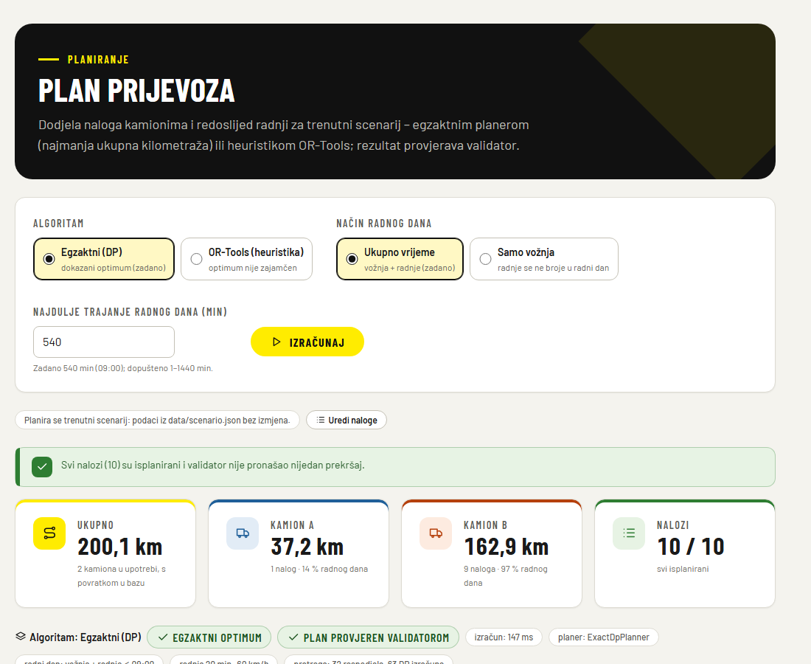
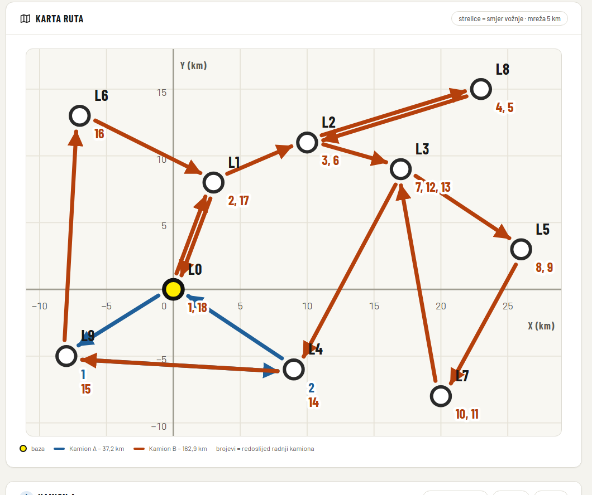
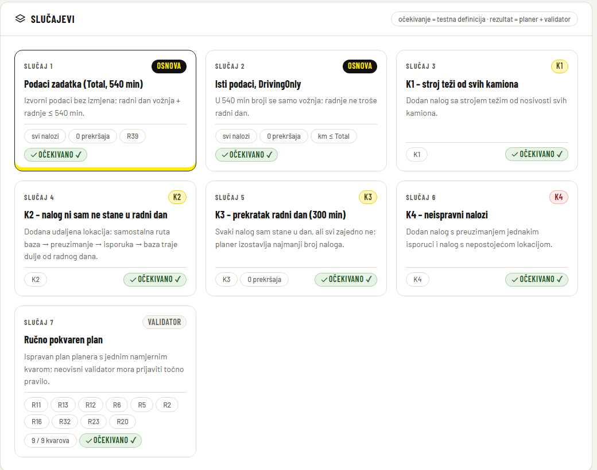

Dokument je nacrt. Polja označena [ ] popunjava prijavitelj prema uvjetima konkretnog poziva. Brojke u dokumentu izračunate su iz aplikacije i podataka zadatka (21. 11. 2026.).
Razvijena je funkcionalna web aplikacija koja za zadani skup transportnih naloga automatski odlučuje kojim kamionom prevesti pojedini radni stroj, kojim redoslijedom obaviti preuzimanja i isporuke te kako pritom smanjiti ukupnu prijeđenu udaljenost, uz obavezan povratak u bazu. Aplikacija poštuje nosivost i najveći broj strojeva svakog kamiona nakon svake radnje, pravilo da isti kamion preuzima i isporučuje stroj (preuzimanje prije isporuke) te ograničenje radnog dana vozača (9 sati, 20 minuta po utovaru/istovaru, 60 km/h).
Na podacima zadatka (2 kamiona, 10 strojeva, 10 lokacija) aplikacija pronalazi dokazano najkraći plan od 200,1 km. Isti posao obavljen kao zasebna vožnja za svaki nalog iznosio bi 477,2 km – optimizirani plan je 277,1 km (58,1 %) kraći. Rezultat svakog izračuna neovisno provjerava zaseban validator, a ispravnost potvrđuje 424 automatizirana testa.
Tvrtke koje iznajmljuju i prodaju radne strojeve svakodnevno prevoze strojeve između baze, gradilišta i klijenata. Planiranje se tipično radi ručno: dispečer procjenjuje koji kamion može nositi koji stroj, slaže redoslijed adresa i pazi na radno vrijeme vozača. Takvo planiranje:
Zamjena ručnog planiranja web aplikacijom koja plan izračuna u djeliću sekunde i prikaže ga razumljivo dispečeru i vozaču.
Najmanja ukupna kilometraža uz sva poslovna ograničenja – izravno manje goriva, troškova i emisija.
Svaki plan prolazi neovisnu provjeru pravila; neizvedivi nalozi prikazuju se s jasnim razlogom.
Arhitektura spremna za stvarne cestovne udaljenosti, više vozila i integraciju s postojećim sustavima.
Web aplikacija (ASP.NET Core, .NET 10 LTS) s hrvatskim korisničkim sučeljem u vizualnom identitetu tvrtke. Stranice:
| Stranica | Namjena |
|---|---|
| Ulazni podaci | Pregled kamiona, strojeva, lokacija i naloga, matrica udaljenosti i karta naloga; upozorenja na neispravne podatke. |
| Nalozi | Dodavanje, izmjena i brisanje naloga (i novog stroja s upisanom masom); plan se odmah ponovno izračunava. |
| Plan prijevoza | Za svaki kamion: redoslijed lokacija, radnja (preuzimanje/isporuka), teret i broj strojeva nakon svake radnje, dionice i ukupni km, broj naloga, vrijeme radnog dana; ukupna kilometraža; upozorenja na neizvedive naloge; karta ruta; izbor algoritma i načina obračuna radnog dana. |
| Testni scenariji | Interaktivni rubni slučajevi (pretežak stroj, predaleka lokacija, prekratak radni dan, neispravan nalog, namjerno pokvaren plan) s prikazom očekivanog i stvarnog ishoda. |
| Pravila i provjere | Popis svih poslovnih pravila i koja od njih validator provjerava. |
| Dokumentacija i Pregled | Specifikacija, zapis odluka, opis algoritma, rezultati i tijek razvoja – unutar aplikacije. |

| Pravilo | Kako je ostvareno |
|---|---|
| Kamion A: 3.500 kg / 2 stroja; kamion B: 10.000 kg / 3 stroja | Provjerava se nakon svake radnje, ne samo na početku rute. |
| Isti kamion preuzima i isporučuje; preuzimanje prije isporuke | Nalog je nedjeljiv i pripada jednom kamionu; stanje naloga (čeka → na kamionu → isporučen) ne može ići unatrag. |
| Ruta počinje i završava u bazi; kamion smije ostati neiskorišten | Povratak u bazu uračunat je u kilometražu i radni dan. |
| Udaljenost | Euklidska udaljenost po dionici, zaokružena na jednu decimalu, tek zatim zbrojena. |
| Radni dan | 60 km/h (1 km = 1 min), 20 min po radnji; zadano vožnja + radnje ≤ 540 min, alternativno samo vožnja ≤ 540 min. |
| Neizvedivi nalozi | Plan se uvijek vraća; nalog koji se ne može izvršiti prikazuje se s razlogom: K1 pretežak za sve kamione, K2 ni sam ne stane u radni dan, K3 ne stane uz ostale naloge, K4 neispravni podaci. |

Ispravnost se ne oslanja na povjerenje u jedan algoritam, nego na više neovisnih provjera:

| Pokazatelj (podaci zadatka) | Pojedinačne vožnje | Optimizirani plan | Razlika |
|---|---|---|---|
| Ukupno km | 477,2 km | 200,1 km | −277,1 km (−58,1 %) |
| Vrijeme vožnje (60 km/h) | 7 h 57 min | 3 h 20 min | −4 h 37 min |
| Broj polazaka iz baze | 10 | 2 | −8 |
| Kamion | Nalozi | Km | Radni dan (vožnja + radnje) |
|---|---|---|---|
| Kamion A (3.500 kg, 2 stroja) | 1 | 37,2 km | 01:17 od 09:00 (14 %) |
| Kamion B (10.000 kg, 3 stroja) | 9 | 162,9 km | 08:43 od 09:00 (97 %) |
| Ukupno | 10 / 10 | 200,1 km |
„Pojedinačne vožnje” = svaki nalog kao zasebna vožnja baza → preuzimanje → isporuka → baza, s istim pravilom izračuna udaljenosti; služi kao usporedba s planiranjem bez optimizacije. Potrošnja goriva i emisije CO2 proporcionalne su prijeđenim kilometrima; konkretan iznos ovisi o vozilu i treba ga izračunati faktorima prijavitelja [l/100 km, kg CO2/l].
| Sloj | Rješenje |
|---|---|
| Domenska logika | C# (.NET 10 LTS), neovisna o web sloju: model, izračun udaljenosti, planeri, validator. |
| Web | ASP.NET Core Razor Pages, Bootstrap 5, SVG karta bez JavaScript okvira. |
| Optimizacija | Vlastiti egzaktni algoritam (dinamičko programiranje) i Google OR-Tools (licenca Apache 2.0). |
| Testiranje | xUnit, 424 testa; referentni (oracle) algoritam za usporedbu. |
| Isporuka | Web aplikacija u oblaku (Microsoft Azure App Service) [URL]; izvorni kod u git repozitoriju. |
Sam planer nije sustav umjetne inteligencije: koristi determinističke, objašnjive algoritme (isti ulaz uvijek daje isti plan). Alati umjetne inteligencije (Claude Code) korišteni su u razvoju – za pisanje koda, testova i dokumentacije – uz sljedeća pravila: